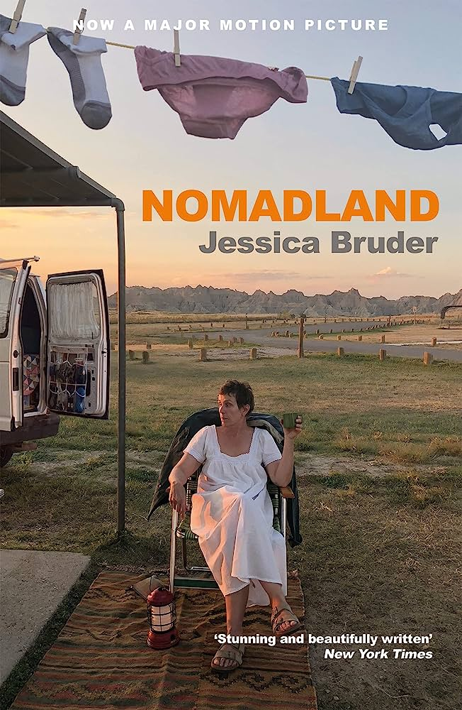
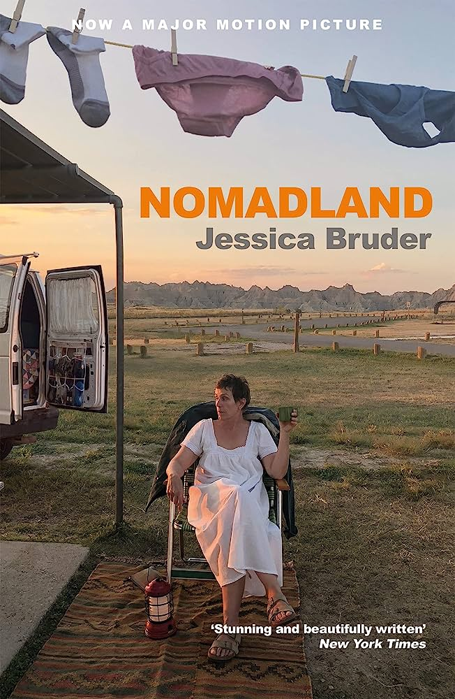

Sou de uma cidadezinha de 9 mil habitantes no leste do estado chamada Frei Inocêncio,
a cidade já é pequena e eu cresci na zona rural dela.
No momento da criação dessa página,
eu vivo em Alfenas a mais de 1 ano. Nunca tive o sonho de fazer computação, foi uma
decisão que eu tomei pouco antes de vir pra Unifal.
Acompanho bastante o esporte, sou flamenguista, mas não me limito somente a assistir
os jogos do meu time do coração, vejo muito futebol europeu, o campeonato que eu mais
gosto de ver é a Premier League da Inglaterra, mas também vejo jogos de La Liga ,e as
vezes, da Seria A italiana.
Acompanho bastante o esporte, sou flamenguista, mas não me limito somente a assistir os jogos
do meu time do coração, vejo muito futebol europeu, o campeonato que eu mais gosto de ver é a
Premier League da Inglaterra, mas também vejo jogos de La Liga ,e as vezes, da Seria A italiana.
Sempre preferi assistir filmes ao invés de ver séries, e parece que essa preferência só aumentou,
meu gênero preferido é o de drama, gosto da ideia de tentar interpretar a mensagem que o diretor
tentou transmitir pela obra. E eu não assisto filmes de terror, em hipótese alguma.
Não tenho um filme preferido, mas tem alguns que eu sempre gosto de citar:
Escola Estadual Frei Inocêncio – EEFI – Frei Inocêncio – Minas Gerais